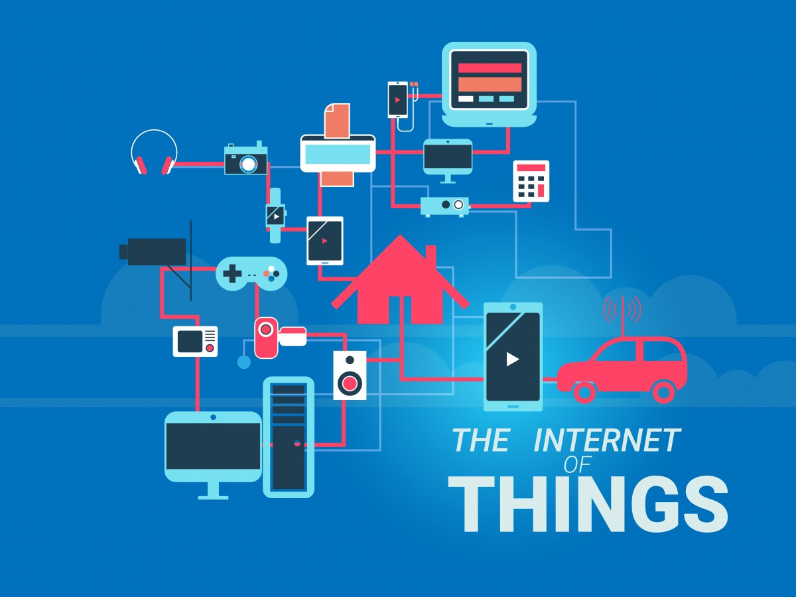

Innovation in government occurs virtually every day—from the way governments across the world are opening up their data to entrepreneurs to build apps for everything from real-time transit information to school test score comparisons to the myriad ways soldiers on the battlefield innovate to address life-and-death challenges.
The Internet of Things (IoT), refers to the use of data sensors and other internet-connected devices to control physical objects - this has been rapidly turning business systems on their heads.
Harnessing the technology effectively means that governments can produce smarter and better serving cities that will be in the best position to drive the economy forward. Using the ‘Internet of Things’ devices to monitor their city’s ‘health’, government’s will be able to pre-empt and deliver services that are catered to their citizens and the communities they service.

Internet of Things - can enable an exchange of data never available before, and bring users information in a more secure way.
Cloud Computing - the practice of using a network of remote servers hosted on the Internet to store, manage, and process data, rather than a local server or a personal computer.